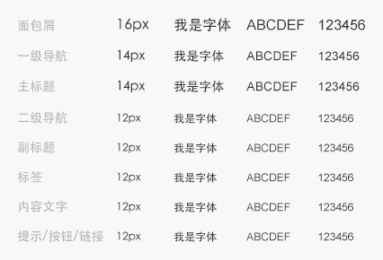
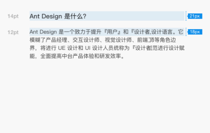
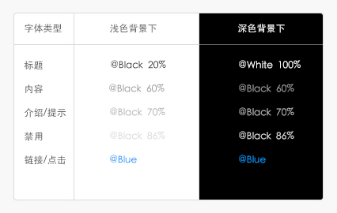

字体
字体是界面设计中最重要的基本构成之一，用户通过文本来消化内容和完成工作，
优雅的字体将大大提升用户的阅读体验及工作效率。
在满足不同终端始终保持良好的阅读体验的同时，使页面的视觉层次更加清晰。
使用时有以下三点需要注意：
- 合理的使用不同的字重、字号和颜色来强调界面中最重要的信息；
- 尽可能的使用单种字体、混合使用多种字体会让界面看起来零散和草率；
- 字体在使用时与背景颜色的对比值满足无障碍阅读的最低标准。
字号
使用不同的字号和字重来传递视觉的信息层次。默认中文字体为：黑体 - 简；
英文字体为：Arial。

行高
行高会影响阅读的体验，西文的基本行高通常是字号的1.2em上下，而中文因为字符密实且高度一致，
所以一般行高需要更大，1.5em至1.8em之间是一个比较好的视觉阅读效果，展示型页面可根据实际情况调整行高。
字体行高绝对值为⌈字号×1.5倍⌋。例如：12号字体的行高为18px，
14号字体的行高为21px。

字体颜色
文本颜色如果和背景颜色太接近就会很难以阅读，
这对于深色背景和浅色背景同样适用。

注：表格中@Black=#000000、@White=#FFFFFF、@Blue=#1f95ef、%指的是
HSB中的B（饱和度），不是透明度。